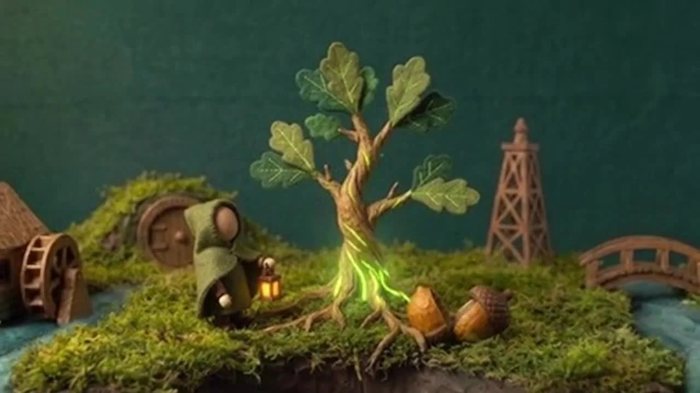

Your AI agent, on Robinhood Chain
npm install -g @oakagentkit/addon
oak connect claudeOak is free. Install, then run oak connect for your app in your terminal. Set up has commands for Codex and Cursor, plus the other supported apps.
What Oak does
Connect once. Access everything.
One connection gives your AI agent all 34 Robinhood Chain projects: trade, lend, borrow, use vaults and launch tokens, from a wallet on your computer.
-
Connect once
Install Oak and add one MCP connection to Claude Code, Codex, Cursor or another host. A wallet is created on your computer on first use.
-
Reach all 34 projects
Swap and place limit orders, lend and borrow, deposit into vaults, bridge, and launch and trade tokens on Pons, all in your own words.
-
Approve in chat
Your agent shows a plain summary and asks for a yes or no in chat before local signing. Approvals match the exact amount, never unlimited. Common actions take two steps: prepare, then execute.
Getting started
From install to your first prompt.
1. Install
Node.js 22.12.0 or newer. In your terminal:
npm install -g @oakagentkit/addon
The add-on includes @oakagentkit/core. Version 0.3.0 makes Oak free to use on Robinhood Chain, with approval in chat, an optional daily spending limit in USD, oak connect, Upoch reads. Agent 1's public tracker is being prepared. Run oak --version to see the version you have.
2. Connect your agent
Connect directly with Node.js 22.12.0 or newer and npm on your PATH. These shortcuts run npx -y @oakagentkit/addon@0.3.0 mcp; no global Oak install is needed.
Add to Cursor Install in VS Code
For Claude Code, run these two commands inside Claude:
/plugin marketplace add OakAgentKit/oak
/plugin install oak@oak-agent-kit
Approve your app’s install prompt and start a fresh session. If you already added Oak manually, use that connection or remove the duplicate before installing. Registering your agent ID still needs its own yes.
Claude Code, in your terminal:
oak connect claude
Codex, in your terminal:
oak connect codex
Cursor, in your project folder’s terminal:
oak connect cursor
Gemini, Grok and other MCP hosts: Set up has each one. Start a fresh session after connecting.
3. Ask your agent
Paste a first prompt:
-
What can you do with Oak? Group the tools by project.
-
Show my Oak wallet address and balances. Do not send anything.
-
Quote a swap of 5 USDG to ETH with the best route. Show the preview and do not swap yet.
-
Lend 10 USDG on Priors. Show me the preview before anything is signed.
-
Deposit 10 USDG into a Steakhouse vault. Show me the preview first.
-
Show my open positions across every project.
Every action shows a summary first, then asks for your yes or no in chat.
One click selects a whole command or prompt. Then copy it: Cmd or Ctrl + C, or long-press on a phone.
For builders
One MCP for the whole chain.
MCP (Model Context Protocol) is a connection for AI tools. One local connection gives your agent 34 projects and 737 tools on Robinhood Chain: project information, balances, swaps, bridges, lending and identity.
Your agent's tool list shows the everyday tools. For anything not listed, it calls find_tool with what it wants to do, then run_tool with the tool's name and arguments. Tools run this way get the same checks, local guard, summary and yes-or-no approval as a direct call.
Connect Claude Code, Codex, Gemini, Cursor or another compatible host. Build your own workflows and experiment with autonomous agents. Pons token launches and curve buys are one example among the project tools.
$OAK is live. Oak is free. Reads work straight away. Actions need a verified ERC-8004 agent ID and your yes or no in chat. Call account to see where your setup stands. Official $OAK address: 0x6511c233790Ec10f7d673c64DC82C3F941D57828. Pons page: https://ponsfamily.com/launchpad/0x6511c233790ec10f7d673c64dc82c3f941d57828.
Connect your agent ↗ Browse every tool ↗
All 34 projects and supported agents
- KyberSwap
- Velora
- Steakhouse
- Spark
- NetNet
- Longbow
- Grove
- Beefy
- Pons
- Orbio
- HoodLock
- Merkl
- Relay
- Lighter
- ERC-8004
- hood.ag
- HeyResearch
- Priors
- Morpho Blue
- Uniswap liquidity
- Meridian
- Hookr
- TickerSpring
- Clanker
- pools.trade
- Wormhole
- LayerBank
- Pendle
- Borro
- Chop
- Gloam
- Factor
- Raeto
- Upoch
Claude Code · Codex · Cursor · Gemini · Grok
Mainnet: 4663. Testnet: basic tools and ERC-8004 identity only.
Docs, examples and contracts are MIT. The compiled npm packages are Free-to-Use, No Copying; their source and the hosted Oak service are private.
New in Oak
Oak 0.3.0 is free.
Install Oak, fund your agent and talk to it. Your agent asks before it acts, in plain words in chat. Use oak connect to connect Claude Code, Codex, Cursor, Gemini CLI or Grok.
- Upoch is available on Oak: read any agent's Upoch Score, checkpoints and recovery history, plus agents ranked by score.
- Borro deposits go through its Bookrunners program, you see the exact minimum you'll get back, and withdrawals show what's ready today.
- Gloam has clearer private payment steps, and nothing is sent until you say yes.
- Agent Wormhole checks outside text your agent gets through Oak, with a short, clear verdict. A passed check is not proof of safety.
The Borro, Gloam and Wormhole upgrades came from running Oak Agent 1 live and checking its logs. Agent 1's live tracker is being prepared.
Factor is an official Oak partner. Factor's own team runs its product and contracts; Oak didn't build them and doesn't run them. Oak integrates with Raeto. Raeto's own team runs its product and contracts; Oak didn't build them and doesn't run them.
Oak x Chop. Chop's own team runs its product and contracts; Oak didn't build them and doesn't run them. Borro is an official Oak partner. Borro's own team runs its product and contracts; Oak didn't build them and doesn't run them.
In plain English
One connection. More things to ask.
An AI agent is an assistant that uses tools. Oak connects it to apps on Robinhood Chain, so you can ask it to check balances, compare a swap or use a project without wiring up each app yourself.

Your agent shows a plain summary of each action and asks for your yes or no in chat. After a yes, your wallet signs on your computer. A summary shows expected changes; actual outcomes can differ.
What it costs
Oak is free.
Install Oak, connect your agent and use every tool. Oak takes a 0.25% fee on swaps and bridges, and partners pay Oak referral fees. Network fees and each project's own fees still apply.
25% of Oak's income buys back and burns $OAK. Holding $OAK has no access perks.
How Oak is funded ↗Self-custody
Your wallet stays with you.
Your private key never leaves your computer. Oak cannot recover a lost key. Run oak init or oak export only in your own terminal, never through the agent.